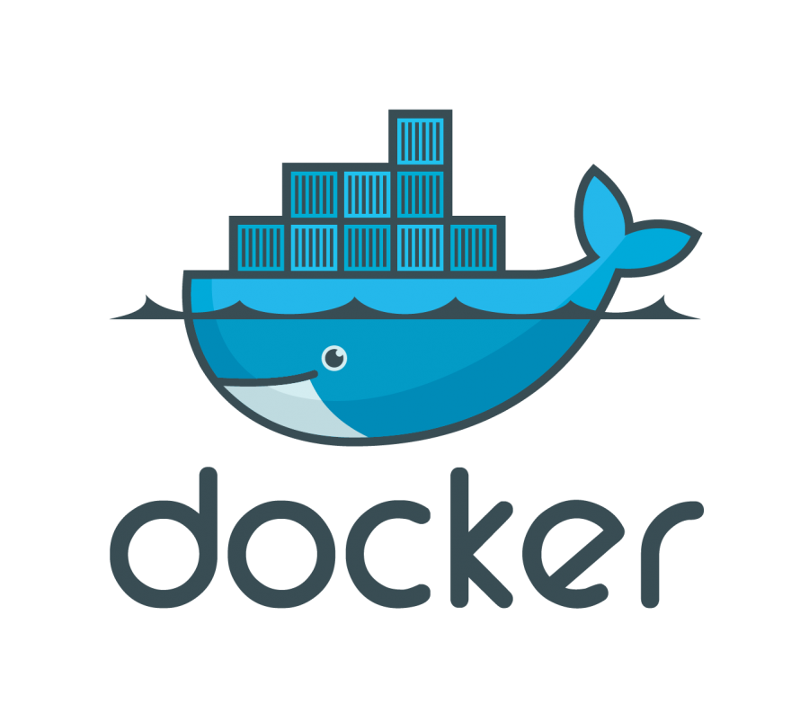

Over the past few months (particularly over the holiday season), I started to explore and learn several technologies I’ve had my eye on the last few years. First on the list: Docker. These days, Docker has a massive ecosystem surrounding it, and can take years to truly master. This post on the other hand, will hopefully help you get up and playing with docker containers in just a few minutes. Lets get started.
Installing Docker

Installing docker on Solus was easy enough. I just had to install the package, and then enable the service:
sudo eopkg it docker
sudo systemctl enable docker
sudo systemctl start dockerOn other distributions, it may not be in the package manager, or it might be under a different name. To be sure, check out the community edition installation documentation for your specific distro.
Adding User to Docker Group
By default, user accounts will not have permission to run docker commands
without root access. So, after first installing docker, it might be tempting to
just run everything using sudo, but that isn’t the best idea. To get around
this, simply add the user account to the docker group:
sudo usermod -a -G docker ryanIf the docker group is not created for some reason, it can be added:
sudo groupadd dockerAfterwards, that user should be able to run docker commands without requiring
sudo. They might have to log out and back in first.
Note: These commands may differ based on distro.
Some Useful Commands
Before getting too caught up in creating and using containers, lets first go over a few useful commands that make navigating docker a bit easier.
docker ps
{kind=link}
Similar to how Unix-based systems have the ps command to see running
processes, docker has docker ps to see created and running containers. To
view the currently running containers, use the basic docker ps command:
The base command however, doesn’t always tell the whole story. A system might
have containers that exist but are not running. A container may have been
stopped, or exited if it encountered an error. Containers that are stopped or
exited will not show up in the default docker ps command. To see all of the
current containers on the system, run ps with the -a flag.
docker inspect
{kind=link}
Another useful command when working with docker containers is docker inspect.
The inspect command will dump the xml for all the low level information of the
container/docker object. The output contains basically everything about the
container: Full ID, time created, state, volumes, network information…
everything. It can be useful to pipe the output of inspect to grep, in order
to get specific information about the container quickly.
docker inspect container_name | grep IPAddressFor example, the above command will grab and return only the lines which contain “IPAddress”.
help
{kind=link}
Last but not least, don’t forget about the help command. To see all the
available docker commands, run docker help.
Additionally, when using each of those specific commands, (inspect for
example), a description and possible options can be shown using the --help
flag (as in docker inspect --help).
Just as man pages can be extremely valuable when working on a Linux system,
help is just as essential when using docker.
Images
A docker container is created from a base image. Images can be pulled down
from Dockerhub. To search docker hub from command
line, use the docker search command. For example, docker search nginx will
search for images related to nginx.
{kind=link}
The search will list all of the public images in order, from most to least
stars. When a desired image is found, pull it down using the docker pull
command. For example, docker pull nginx will pull down the nginx
image.
{kind=link}
Docker will then download all the layers for the image. When the download
completes, the image will be locally available to create docker containers
from. To see all of the local images, use the docker images command:
To delete an image, use the docker images rm command, or my preferred, lazier
command, docker rmi:
{kind=link}
Lastly, it should be noted that custom images can be created/tailored using a
Dockerfile. With a
Dockerfile is defined, an image can be created from it using the docker build
command. For example, the following Dockerfile would use an
ubuntu image for the base, but also update &
install several packages in the image:
# This is a custom ubuntu image with SSH already installed
FROM ubuntu:latest
MAINTAINER himmallright <ryan.himmelwright@gmail.com>
RUN apt-get update
RUN apt-get install -y vim stow git tmux fish htop emacsTo build the image, run the following command in the same directory as the
Dockerfile (if defining a specific file, the -f flag can be used):
docker build -t ubuntu-base:v1 .I like to use the -t flag, so that I can specify a name:tag for the image.
This helps to make it easier to find it in the docker images list.
Creating Containers
Docker containers can be created (but not run) with the docker create
command. When creating containers, it is useful to use flags to tailor the
details of the container. For example, the -m flag can be used to create a
memory limit, --name to name the container, and so on. To create a simple nginx
container from the image we previously pulled:
docker create --name web-test nginx:latestStarting & Running Containers
To start a container created with docker create, or one that has been previously
stopped, use the docker start command. For example, to start
the container created in the previous step:
docker start web-test
Similarly, a container can be stopped with docker stop, or restarted with
docker restart.
Instead of using a docker create and docker start combination, docker run
can be used to both instantiate and start a container. To create and start the
“web-test” container from the previous examples:
docker run --name web-test -d nginx:latest
Cleaning containers
{kind=link}
Over time, old containers may build up on the system. To remove an old (but not
running) container, use docker rm with either the container name, or the id.
Note, to easily delete all of the containers on the system, docker rm can be
fed the output of docker ps -aq, where the -aq flag returns a list of all
the container ids.
docker rm `docker ps -aq`(Note: this doesn’t work in my Fish shell, but does in bash)
Attaching to Containers
After a container is running, it might occasionally be necessary to attach to
it and poke around with a shell. There is the obvious way to do this,
docker attach, and a somewhat work-around way, which I prefer to use: docker
exec.
{kind=link}
The attach command works as one would expect. It allows a user to “Attach local standard input, output, and error streams to a running container”. This is all well an good, except for one issue: when exiting the attached container, the container also exits.
{kind=link}
A way around this annoyance is to utilize the docker exec command, which
allows a command to be executed inside a container. Executing a shell program
inside the container, such as bash, mimics the attach command, but with the
added benefit that when exiting, only the shell exits, and not the entire
container.
Ports & Volumes
As mentioned earlier, docker containers can be built and run using many specific
commands to tailor the container and how it interfaces with the host system.
There are two concepts in particular that I want to briefly touch on in this
quick start post. Those two items, are ports and volumes.
Ports
{kind=link}
While it is nice to spin up a web server inside a docker container, it isn’t
always very useful to only have it available to the host machine. By using the
-p flag when running a container, the container’s ports can be forwarded to
ports on the host system.
{kind=link}
Using -p with just a single number, as in -p 8080, will declare that port of
the container to be exposed. To forward exposed ports to the host, use two
port numbers, separated with a :. The first number is the host port to bind
to, and the second is the container port to expose and forward.
docker run -itd --name webtest -p 8081:80 nginx:latest
The above example, a nginx container is started with port 80 forwarded to port 8081 on the host. As a result, any computer connecting to port 8081 of the host machine will be directed to the nginx web server inside the container.
Volumes
{kind=link}
Lastly, by design docker containers are mean to be expendable. They are run, and then disposed. It should not be assumed that any data inside the container will be preserved by default. That is, unless volumes are used.
{kind=link}
Docker volumes are the preferred mechanism for preserving data across container
runs, and are specified using the -v flag. Similar to setting ports, volumes
can be created by providing either a single path, or two separated by a :.
When a single path is provided, as in -v /Data, docker will create a volume
and bind it to that location within the container. Two locations can be provided
to bind a directory on the host system, to the volume inside to container.
docker run -d --name testsite -v /home/ryan/testsite/:/usr/share/nginx/html nginx:latest
In the above command, for example, -v
/home/ryan/testsite/:/usr/share/nginx/html will use the /home/ryan/testsite/
directory of the host system, as a volume located at /usr/share/nginx/html
inside the container. This means that the container will server the website
files, which are located (and can be easily edited), on the host system.
In Conclusion
So, this has been… a rather long post. However, when it comes to Docker, this really is just the tip of the iceberg. With any luck though, you should now know the basic to at least get started. So… go ahead and have some fun!.
Trying Out Seafile Living the Dock Life: My Thinkpad T470